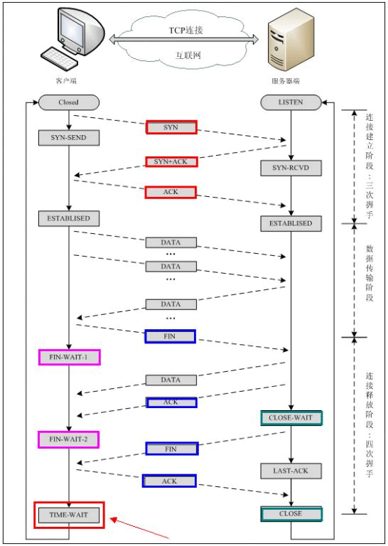
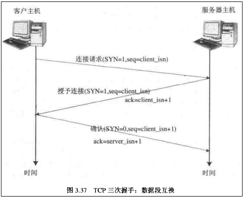
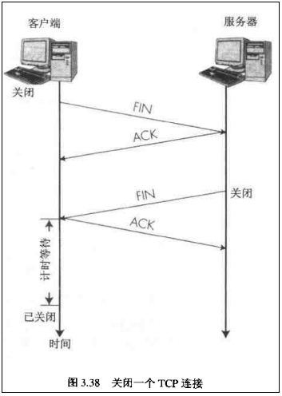
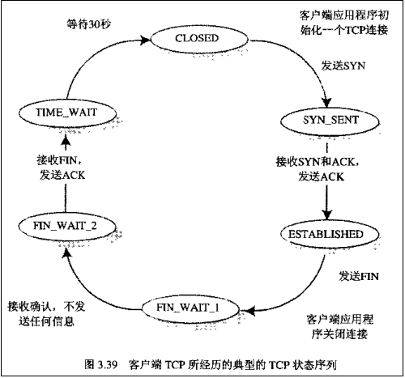
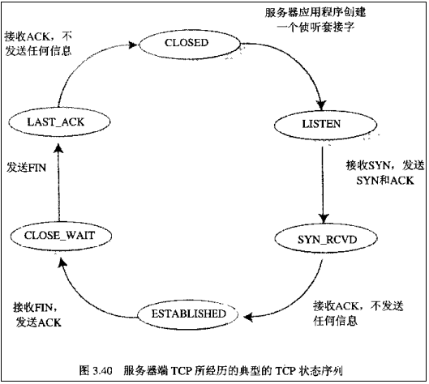

参考自：
http://blog.csdn.net/qq598535550/article/details/52997218
http://blog.csdn.net/guyuealian/article/details/52535294
声明
由于本人并不了解TCP相关协议,所以该文主要是复制粘贴。至于为什么要复制粘贴？当然是为了以后深入学习了解时查资料方便。毕竟网上讲解一大堆,但是自己多看看整合在一起查找起来方便点。
开始
在谈及TCP建立连接和释放连接过程，先来简单认识一下TCP报文段首部格式的的几个名词（这里只是简单说明，具体请查看相关教程）
序列号seq：占4个字节,用来标记数据段的顺序,TCP把连接中发送的所有数据字节都编上一个序号,第一个字节的编号由本地随机产生；给字节编上序号后,就给每一个报文段指派一个序号；序列号seq就是这个报文段中的第一个字节的数据编号。
确认号ack：占4个字节,期待收到对方下一个报文段的第一个数据字节的序号；序列号表示报文段携带数据的第一个字节的编号；而确认号指的是期望接收到下一个字节的编号；因此当前报文段最后一个字节的编号+1即为确认号。
确认ACK：占1位,仅当ACK=1时,确认号字段才有效。ACK=0时，确认号无效。
同步SYN：连接建立时用于同步序号。当SYN=1,ACK=0时表示：这是一个连接请求报文段。若同意连接,则在响应报文段中使得SYN=1,ACK=1。因此,SYN=1表示这是一个连接请求,或连接接受报文。SYN这个标志位只有在TCP建产连接时才会被置1,握手完成后SYN标志位被置0。
终止FIN：用来释放一个连接。FIN=1表示：此报文段的发送方的数据已经发送完毕,并要求释放运输连接。
PS：ACK、SYN和FIN这些大写的单词表示标志位，其值要么是1，要么是0；ack、seq小写的单词表示序号。
建立TCP需要三次握手才能建立，而断开连接则需要四次握手。整个过程如下图所示：

先来看看如何建立连接的。

首先Client(客户)端发送连接请求报文，Server(服务)端接受连接后回复ACK报文，并为这次连接分配资源。Client端接收到ACK报文后也向Server端发送ACK报文，并分配资源，这样TCP连接就建立了。
那如何断开连接呢？简单的过程如下：

注意：中断连接端可以是Client端，也可以是Server端！！！
假设Client端发起中断连接请求,也就是发送FIN报文。Server端接到FIN报文后,意思是说“我Client端没有数据要发给你了”,但是如果你还有数据没有发送完成,则不必急着关闭Socket,可以继续发送数据。所以你先发送ACK,“告诉Client端,你的请求我收到了,但是我还没准备好,请继续你等我的消息”。这个时候Client端就进入 FIN_WAIT 状态,继续等待Server端的FIN报文。
当Server端确定数据已发送完成,则向Client端发送FIN报文,“告诉Client端,好了,我这边数据发完了,准备好关闭连接了。Client端收到FIN报文后,就知道可以关闭连接了,但是他还是不相信网络,怕Server端不知道要关闭,所以发送ACK后进入TIME_WAIT状态，如果Server端没有收到ACK则可以重传。“Server端收到ACK后,就知道可以断开连接了”。Client端等待了2MSL后依然没有收到回复,则证明Server端已正常关闭,那好,我Client端也可以关闭连接了。Ok，TCP连接就这样关闭了！
整个过程Client端所经历的状态如下：

而Server端所经历的过程如下：

注意：
在TIME_WAIT状态中,如果TCP client端最后一次发送的ACK丢失了,它将重新发送。
TIME_WAIT状态中所需要的时间是依赖于实现方法的。典型的值为30秒、1分钟和2分钟。
等待之后连接正式关闭，并且所有的资源(包括端口号)都被释放。
问题
为什么连接的时候是三次握手，关闭的时候却是四次握手？
因为当Server端收到Client端的SYN连接请求报文后,可以直接发送SYN+ACK报文。其中ACK报文是用来应答的,SYN报文是用来同步的。但是关闭连接时,当Server端收到FIN报文时,很可能并不会立即关闭SOCKET,所以只能先回复一个ACK报文,告诉Client端,”你发的FIN报文我收到了”。只有等到我Server端所有的报文都发送完了,我才能发送FIN报文,因此不能一起发送。故需要四步握手。
发送了FIN只是表示这端不能继续发送数据(应用层不能再调用send发送),但是还可以接收数据。收到一个FIN只意味着这一方向上没有数据流动,一个TCP连接在收到一个FIN后仍能发送数据,比如：如主机A收到主机B的FIN断开TCP连接请求,只是表示主机B已经发送完数据,主机A收到FIN后作出应答,并终止这个方向的数据传输,此时处于半关闭状态。但是主机A仍然可以发送数据的,只有当主机A发送完数据并发送FIN给主机B时,主机B才停止这个方向的数据传输,并关闭TCP连接。为什么TIME_WAIT状态需要经过2MSL(最大报文段生存时间)才能返回到CLOSE状态？
虽然按道理,四个报文都发送完毕,我们可以直接进入CLOSE状态了,但是我们必须假想网络是不可靠的,有可能最后一个ACK丢失。所以TIME_WAIT状态就是用来重发可能丢失的ACK报文。为什么要有三次握手
两次握手的问题在于服务器端不知道一个SYN是否是无效的,而三次握手机制因为客户端会给服务器回复第二次握手,也意味着服务器会等待客户端的第三次握手,如果第三次握手迟迟不来,服务器便会认为这个SYN是无效的,释放相关资源。但这时有个问题就是客户端完成第二次握手便认为连接已建立,而第三次握手可能在传输中丢失,服务端会认为连接是无效的,这时如果Client端向Server写数据,Server端将以RST包响应,方能感知到Server的错误。
总的来说,三次握手可以保证任何一次握手出现问题,都是可以被发现或补救的。